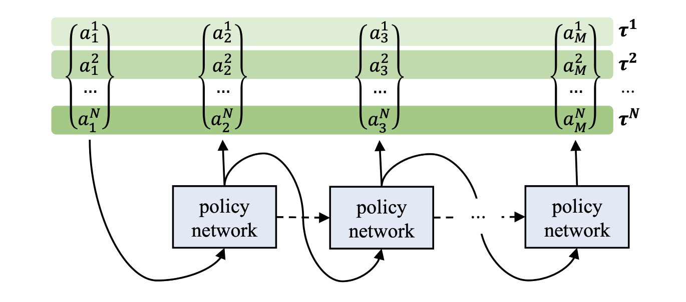
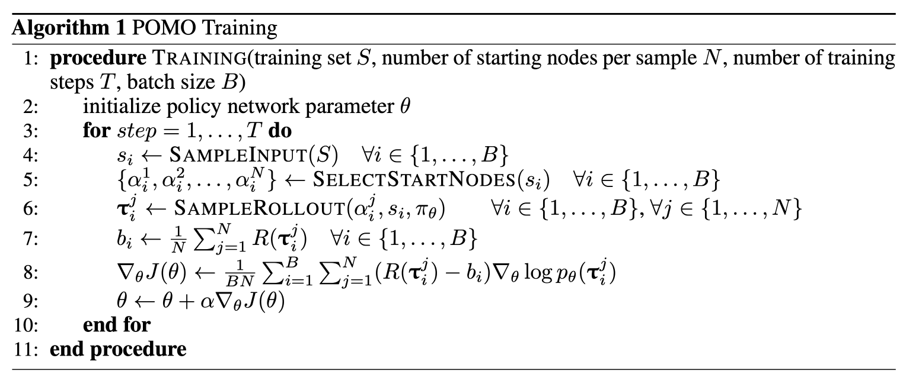
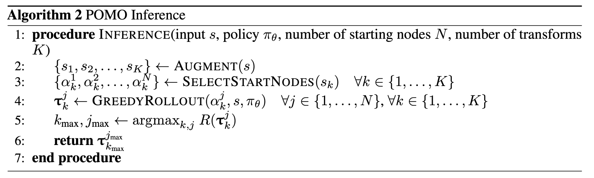
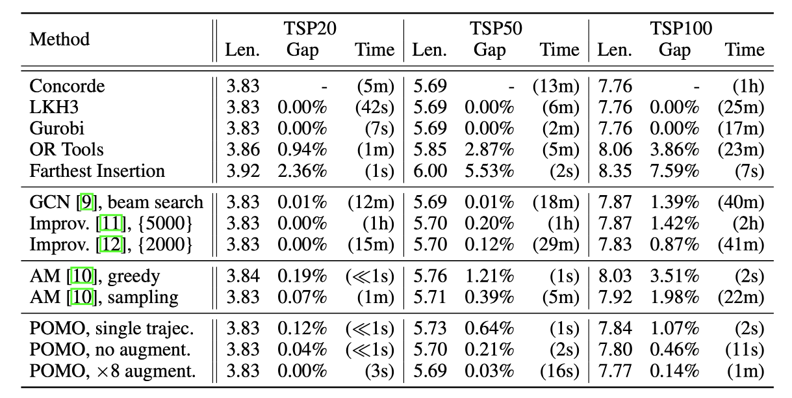
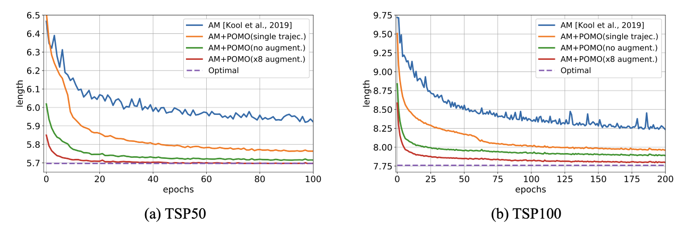
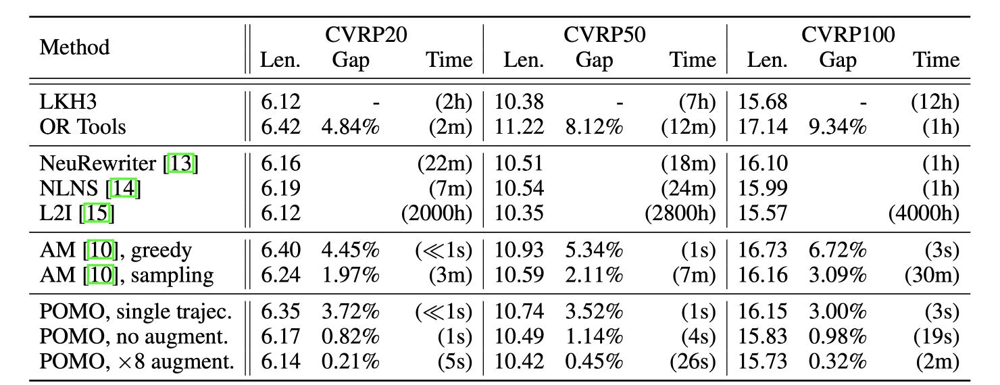
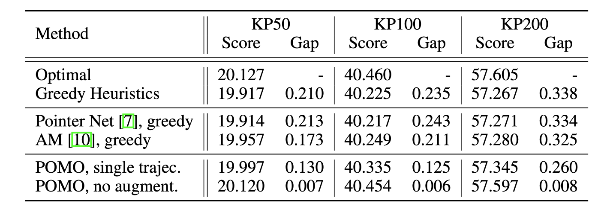

Paper Reading #4: POMO
Last updated on September 9, 2025 pm
本文将精读论文 “POMO: Policy Optimization with Multiple Optima for Reinforcement Learning”，作者 Kwon et al.，时间 2020 年，链接 arXiv:2010.16011。
论文概述
POMO 是 2020 年在 NeurIPS 上发表的一篇文章，主要是利用解的对称性改进 REINFORCE 算法。（PS：似乎韩国人很喜欢对称性，包括后来的 SymNCO 等。）文章在 TSP、CVRP 和 KP 问题上进行了实验。
这篇文章的动机源于一个观察：许多 CO 问题的最优解，都可以有多种等价的序列表示形式。比如一个 TSP 问题的最优路径如果是 1 -> 2 -> 3 -> 1，那么也可以表示为 2 -> 3 -> 1 -> 2 或 3 -> 1 -> 2 -> 3，都是完全一样的。然而，以往的 RL 模型通常使用固定的 START 标志作为起点，这可能会使得模型学习一个特定的起始点，忽略了解的对称性，可能会导致陷入局部最优。POMO 的核心思想就是充分利用这种解的对称性，让模型认识到从多个不同起点出发都可以得到同一个最优解，从而更有效地进行学习和推理。
Abstract
首先，我们阅读摘要部分：
In neural combinatorial optimization (CO), reinforcement learning (RL) can turn a deep neural net into a fast, powerful heuristic solver of NP-hard problems. This approach has a great potential in practical applications because it allows near-optimal solutions to be found without expert guides armed with substantial domain knowledge. We introduce Policy Optimization with Multiple Optima (POMO), an end-to-end approach for building such a heuristic solver. POMO is applicable to a wide range of CO problems. It is designed to exploit the symmetries in the representation of a CO solution. POMO uses a modified REINFORCE algorithm that forces diverse rollouts towards all optimal solutions. Empirically, the low-variance baseline of POMO makes RL training fast and stable, and it is more resistant to local minima compared to previous approaches. We also introduce a new augmentation-based inference method, which accompanies POMO nicely. We demonstrate the effectiveness of POMO by solving three popular NP-hard problems, namely, traveling salesman (TSP), capacitated vehicle routing (CVRP), and 0-1 knapsack (KP). For all three, our solver based on POMO shows a significant improvement in performance over all recent learned heuristics. In particular, we achieve the optimality gap of 0.14% with TSP100 while reducing inference time by more than an order of magnitude.
总的来说，文章对 REINFORCE 算法的改进点主要在以下三个方面：
- 多起点探索：在训练阶段，POMO 抛弃了传统的单一 START 输入。对于一个有 N 个节点的问题实例，POMO 会并行地生成 N 条轨迹，每一条都以一个不同的节点作为起点。这样做强制模型从不同的视角来审视同一个问题，增加了探索的多样性，并直接利用了问题的对称性。
- 共享基线：好的基线能够降低梯度方差，加快收敛。 POMO 提出了一种新颖的共享基线，即对于并行生成的 N 条轨迹，它们的基线被设置为这 N 条轨迹所获奖励的平均值。这种设计的优势是：相比于其他基线（如 greedy-rollout baseline），共享基线的优势项均值为零，方差更小，训练更稳定；每一条轨迹的更新不仅取决于自身的表现，还取决于和其他 N-1 条轨迹的比较结果。这形成了一种内在的竞争和协作，使得训练更不容易过早收敛到次优策略。
- 多路贪婪推理及实例增强：在推理阶段，POMO 会从 N 个不同的节点出发，各自执行一次贪婪搜索，从而确定性地得到 N 个候选解。最终，它会从这 N 个解中选出最好的一个作为最终答案。这种方法会比传统的多次随机采样来得高效和优质。此外，POMO 还提出了实例增强技术：对于一些几何问题（如 TSP 和 CVRP），可以通过旋转、翻转坐标等方式生成 8 个对称的新问题实例。将这 8 个实例分别输入 POMO 模型求解，就可以获得 8 * N 个候选解，从而进一步提升解的质量。
模型及其训练
POMO 不是一种模型，而是一种对 RL 算法的改进，能广泛运用到各种 RL 算法上，提升模型性能。
问题描述及动机
设一个组合优化问题有一系列节点 。有一个可训练的参数为 的策略网络可以对这个问题自回归地（autoregressively）输出解 ，其中第 个动作 可以选择一个节点 。这个网络的策略可以写作：
其中 是由问题实例定义的状态。
一个核心观察是：很多情况下，CO 问题的最优解，可以有多种等价的序列表示形式。例如我们之前举过的 TSP 的例子：如果 是一个最优解，那么 也是相同的最优解。
一个优秀的 agent 应该知道，不管选择从那个节点开始，都应该输出相同的最优解。然而，以往的 RL 模型很多做不到这一点，原因是起始点的选择会很大程度影响后续节点的选择过程，这一点可以从等式(1)中看出。但实际上，从哪个节点开始应该是一样的。因此，作者希望能找到一个策略优化方法能充分利用这种对称性。
多起点探索
在之前的基于 RNN 或 Transformer 的网络中，第一个节点的选择一般是网络做出的。具体来说，网络会接收一个虚拟的 START token，返回第一个节点。一般情况下，使用这种 START token 的方法是合理的，因为能让模型学会选出正确的第一步。然而，当有很多种第一步都是正确的时候，这种方法反而会让模型偏好特定的起点，对不同的策略产生偏见，从而陷入局部最优。对组合优化中的 TSP 等问题，所有的第一步都是一样好的。
为了利用问题的对称性，POMO 抛弃了固定起始点的做法。对于一个包含 个节点的问题实例，POMO 会从 个不同的起点 出发，并行地采样 条独立的轨迹 ，其中每条轨迹 。通过从每一个节点出发进行训练，模型被强迫学习一种不依赖于特定起点的、更具普适性的决策能力，学会在任何情况下都能做出好的判断。

注意，这种方法与在 START token 方案下重复采样 次截然不同。原因是，START token 下的每条轨迹都会接近同一条最优路径，但是 POMO 的 条轨迹会分别接近最优解的 种不同序列表示。作者还使用了一个比喻，POMO 好比是指导一个学生从不同的角度解决同一个问题，这能让她学到多种解决问题的技巧，提高了学习效率。
共享基线
POMO 在 REINFORCE 算法的基础上，提出了一种新的基线（baseline），即共享基线（shared baseline）。当我们采样出 条轨迹 后，我们对每个解 计算回报（return，也就是 total reward）。接着，用策略梯度来最大化回报的期望 ：
其中 ， 是一个使梯度的方差减小的基线。一般情况下，可以对每个轨迹取不一样的基线。但在 POMO 中，我们对所有的 采用相同的共享基线：
即共享基线是 条轨迹回报的平均值。
使用这一共享基线的优势如下：
- 更低的梯度方差：相比于 AM 中的 greedy-rollout 基线，POMO 基线的梯度方差更小。注意到，优势项 的均值为 ，这意味着每次梯度更新中，正向的梯度信号和负向的梯度信号可以平衡，从而极大地减小梯度估计的随机波动，使得训练过程更加稳定。而对于 greedy-rollout 基线，其优势项的均值一般都是负数，原因是随机采样的效果很难超过 greedy。这会导致模型收到的学习信号大部分是负向的，需要从持续的惩罚中学习到有效的改进方向，会导致训练不稳定。
- 更高的计算效率：POMO 基线的计算非常容易，只需要对 个回报求均值，即基线的计算成本很小，这能使得整体训练速度更快。而如果使用 greedy-rollout 基线，每次计算基线需要重新运行一次策略网络；如果使用 Critic 网络，每次计算基线时需要对价值网络进行一次完整的前向传播。
- 抵抗局部最优：
- 如果没有共享基线，每条轨迹 都是独立评估的，即从节点 出发的采样路径只和从节点 出发的 greedy 路径比较。如果学到的策略本身就很差，那么此时采样路径和 greedy 路径可能都很差。但两者的差值很小，模型的更新幅度也会很小，最终过早地收敛到一个表现较差的次优策略上。
- 而有了共享基线，每条轨迹的评估不再是独立的，而要和其他 条轨迹进行内部竞争。其中表现好的路径，会收到正面信号；表现差的路径，会收到负面信号。这就会导致各条路径之间的“内卷”，只要有一个方向的探索取得了成功，这个成功就会成为一个标杆，提高基线水平，从而鞭策其他表现不佳的路径进行学习，这使得模型有更强的动力跳出局部最优解。

多路贪婪推理及实例增强
传统的 inference 一般有 greedy 和 sampling 两种模式。平均来说，greedy 解的质量要高于 sampling；但是很多次的 sampling 能够找到比 greedy 更好的解，代价是更大的计算量。
而在 POMO 中，这一矛盾可以得到解决：我们从 个不同的起点 出发，生成 条确定性的 greedy 轨迹，选择其中最好的一条。一般来说， 条 greedy 轨迹的质量要高于 条采样轨迹。
然而，节点数 会限制候选解的数量。作者又采用了实例增强技术：如对 TSP 问题而言，对问题实例进行旋转或翻转，其最优解不变。因此，只要对原始问题的 个节点运用 种变换，就会得到 个看起来不同的问题实例。对每一个实例，POMO 都从 个节点出发，生成 个候选解，一共就有了 个候选解。最终可以从这 个候选解中，选择最好的解。

实验及结果
POMO 是一种通用的强化学习方法，需要用在具体的策略网络上。作者选择的是 AM（Attention Model），这个模型我们在 Paper Reading #2: AM 中介绍过。将 POMO 应用到 AM 上比较直接：Encoder 的工作过程不变，Decoder 每次并行处理 个 query，从而并行生成 条轨迹。
作者在 TSP、CVRP 和 KP 问题上进行了测试。
TSP

其中 “single trajec.” 表示不使用 multiple greedy trajectories for inference（多路贪婪推理），即只从一个随机节点开始生成一条 greedy 轨迹。目的是和 AM (greedy) 进行公平的对比。

CVRP
CVRP 问题有一个固定的起点（仓库），这与 TSP 所有节点平等的特性不同。作者采取了一种朴素的处理方式：将所有客户节点作为离开仓库后的第一个访问节点来并行探索。作者承认这不是最好的处理方式，但这证明了 POMO 方法的鲁棒性。

0-1 KP
这个实验的目的是展示 POMO 的通用性，证明它不仅能解决 routing 问题。作者再次重用了为 TSP 设计的网络，将每个物品的重量和价值当作节点的二维坐标输入模型。
